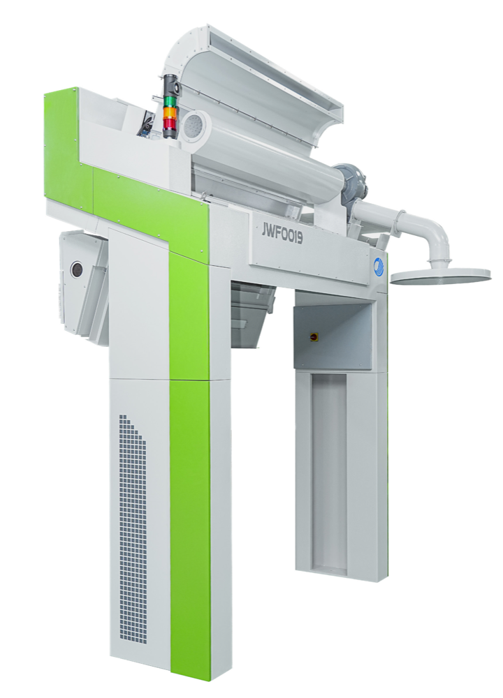

认识结构 · 从外到内
先建立整机方位，再逐层认识相机、算力盒子、电磁阀与排杂风道。
真实3D可完整旋转查看；自动讲解仍在继续完善。

先从正面观察两侧支撑腿与检测通道。
从正面、背面和两侧认识支撑腿、检测通道与排杂出口。
前后共16个相机覆盖1.6米机幅，并保留相邻检测区重叠。
认识4个精灵眼相机、10个算力通道及32个电磁阀的分工。
JWF0019A 异纤机设备知识平台 · 3D演示与知识内容